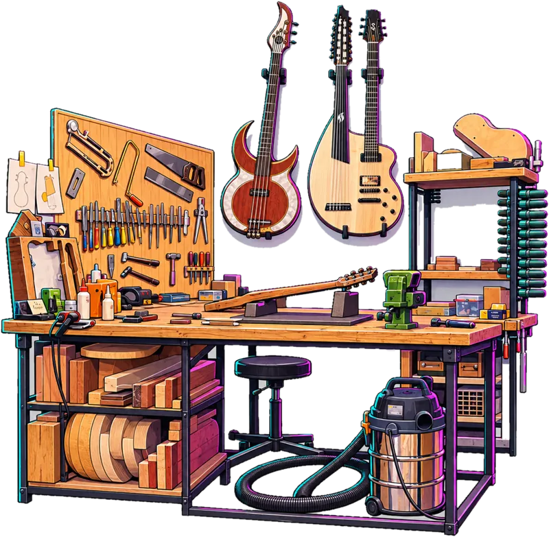

Lazywall · Tangier · 2003 – today
As we
remember it
Twenty years, three brothers, one cartoon. Told from memory, by the people who were there.
Twenty years, three brothers, one cartoon. Told from memory, by the people who were there.
If you landed here, you probably know the songs already, so we won't try to sell you anything.
The press kit has the polished version of our story. This is the other one: the rehearsal rooms, the vans, the nights that went wrong, told the way we remember them.
Come in.
The voice of Lazywall, and the one who plays the basshouj: three bass strings and three guembri strings in a single instrument.
The guitaroud, half guitar and half oud. He left just before the first gig in 2003, and came back in 2013, ten years later.
An instrument he made himself: classic drums mixed with Moroccan percussion, with the darbuka and the bendir added to his set. In March 2003 he put up the ad in Reading that started Lazywall.

Our two custom instruments, the guitaroud and the basshouj, were built by luthier Eric Stiegler. This is his workshop.
Twenty years of gigs, studios, mistakes and miracles, in order. The series tells it as a story, this one as a record.
Open → A Lazywall gameA retro arcade game starring the three of us. Each level is a real episode of our history. Play it as Nao, Youssef or Monz.
Play → InstrumentsThe guitaroud and the basshouj were built for us by luthier Eric Stiegler. The Drumbuka, Monz made himself. None of them exist anywhere else.
See photos →Our take on the Metallica classic, sung in Arabic and carried by the guitaroud and the basshouj.
All videosThe short, polished version of the story, the technical rider and the photos are in the press kit.
Press kit Book the bandA song, a show, a video someone sent you. Tell us how it started and where you write from. We read everything, and we answer.